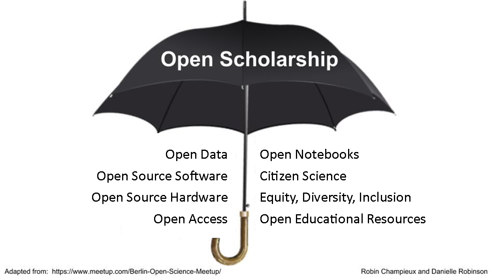

Open scholarship
Open research and its subcomponents fit under the umbrella of a broader concept - open scholarship.

Open educational resources
Open educational resources (OERs) are teaching and learning materials that can be freely used and reused for learning and/or teaching at no cost, and without needing to ask permission. Examples are courses, including Massive Online Open Courses (MOOCs), lectures, teaching materials, assignments, and various other resources. OERs are available in many different formats compatible with online usage, most obviously text, images, audio, and video. Anyone with internet access can access and use OERs; access is not dependent on location or membership of a particular institution.
Unlike copyrighted resources, OERs have been authored or created by an individual or organization that chooses to retain few, if any, ownership rights. In some cases, that means anyone can download a resource and share it with colleagues and students. In other cases, this may go further and enable people to edit resources and then re-post them as a remixed work. How do you know your options? OERs often have a Creative Commons licence or other permission to let you know how the material may be used, reused, adapted, and shared.
Fully open OERs comply with the 5 Rs:
- Retain: the right to make, own, and control copies of the content.
- Reuse: the right to use the content in a wide range of ways (for example, in a class, in a study group, on a website, in a video).
- Revise: the right to adapt, adjust, modify, or alter the content itself (for example, translate the content into another language).
- Remix: the right to combine the original or revised content with other open content to create something new (for example, incorporate the content into a mashup).
- Redistribute: the right to share copies of the original content, your revisions, or your remixes with others (for example, give a copy of the content to a friend).
Researchers generate a great deal of educational resources in the course of teaching students and each other (at workshops, for example). By making these openly available, for example in the open educational resource commons, the wider community can benefit from them in three main ways:
- Most obviously, the community can use the materials to learn about the material they cover.
- Sharing resources reduces duplication of effort. If an educator needs materials for teaching and such materials already exist openly then they need not make their own from scratch, saving time.
- Making materials openly available helps a community build better resources by improving resources that already exist and combining OERs to take advantage of their different strengths, such as a great diagram or explanation.
Beyond the raw practical benefits the worldwide OER movement is rooted in the human right to access high-quality education. This shift in educational practice is about participation and co-creation. Open Educational Resources (OERs) offer opportunities for systemic change in teaching and learning content through engaging educators in new participatory processes and effective technologies for engaging with learning.
Equity, diversity, inclusion
Open scholarship means open to everyone without discrimination based on factors such as race, gender, sexual orientation, or any number of other factors. As a community we should undertake to ensure equitable opportunities for all. We can go about that by deliberately fostering welcoming, inclusive cultures within out communities. For example, reasonable accommodations should be made wherever possible to include community members with disabilities to enable them to participate fully, and this can be as simple as choosing colourblind-safe colour schemes when making graphs.
Citizen science
Citizen science is the involvement of the public in scientific research – whether community-driven research or global investigations, the Oxford English Dictionary recently defined it as: "scientific work undertaken by members of the general public, often in collaboration with or under the direction of professional scientists and scientific institutions". Citizen science offers the power of science to everyone, and the power of everyone to science.
By allowing members of the public to contribute to scientific research, citizen science helps engage and invest the wider world in science. It also benefits researchers by offering manpower that simply would not be accessible otherwise. Examples of this include finding ways of folding molecules, and classifying different types of galaxies.
Patient and Public Involvement
Whilst citizen science encompasses one way of contributing to scientific research, Patient and Public Involvement (PPI) is a far more specialised form of citizen science which is particularly useful when doing research on health and/or social issues.
PPI is not:
- Participation: Recruitment of participants (such as for a clinical trial or survey) to contribute data to a project.
- Engagement: Dissemination, such as presenting at patient interest groups or writing a blog post.
PPI is:
- Involvement: patients and members of the public contribute at all stages of the research cycle.
When incorporating PPI into research, researchers work with volunteers, rather than doing work about them. PPI volunteers are usually patients or members of the public with a particular interest in some area of research which means that the topic is often very personal, and being involved in the research cycle can be an empowering experience. For the researcher, PPI often generates unique and invaluable insights from the volunteers' own personal expertise which cannot always be predicted by the researchers themselves.
It is a good idea to consider PPI very early in a project, ideally before any grant applications or submissions for ethical approval have been written. PPI volunteers can help researchers in many ways, such as the following:
- Generate or shape research questions.
- Contribute to, or review, study design.
- Help with grant applications or submissions to research ethics committees (particularly the lay summary).
- Collect data.
- Analyse data.
- Contribute to the manuscript and be listed as a co-author.
- Disseminate findings in plain English.
One of the biggest barriers to PPI is not knowing how to get started. The UK National Institute for Health Research have their own site, INVOLVE, to help familiarise yourself with the foundations of PPI. Additionally, charities related to your specific research field may be able to facilitate or support PPI; for example Cancer Research UK and Parkinson's UK have formal guides in place that provide a comprehensive overview of PPI.